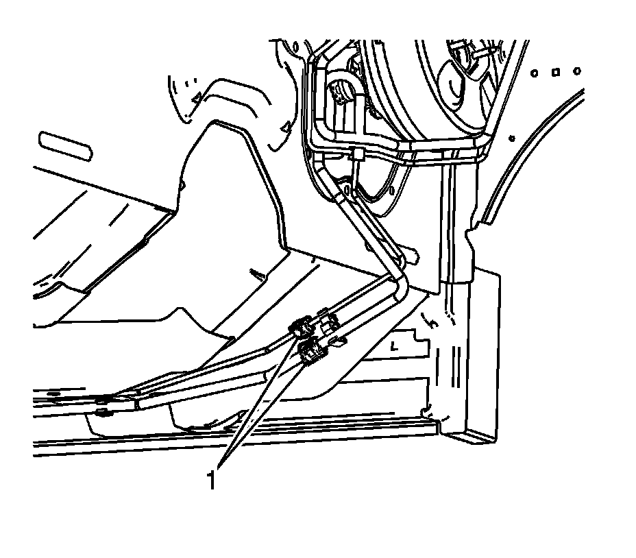
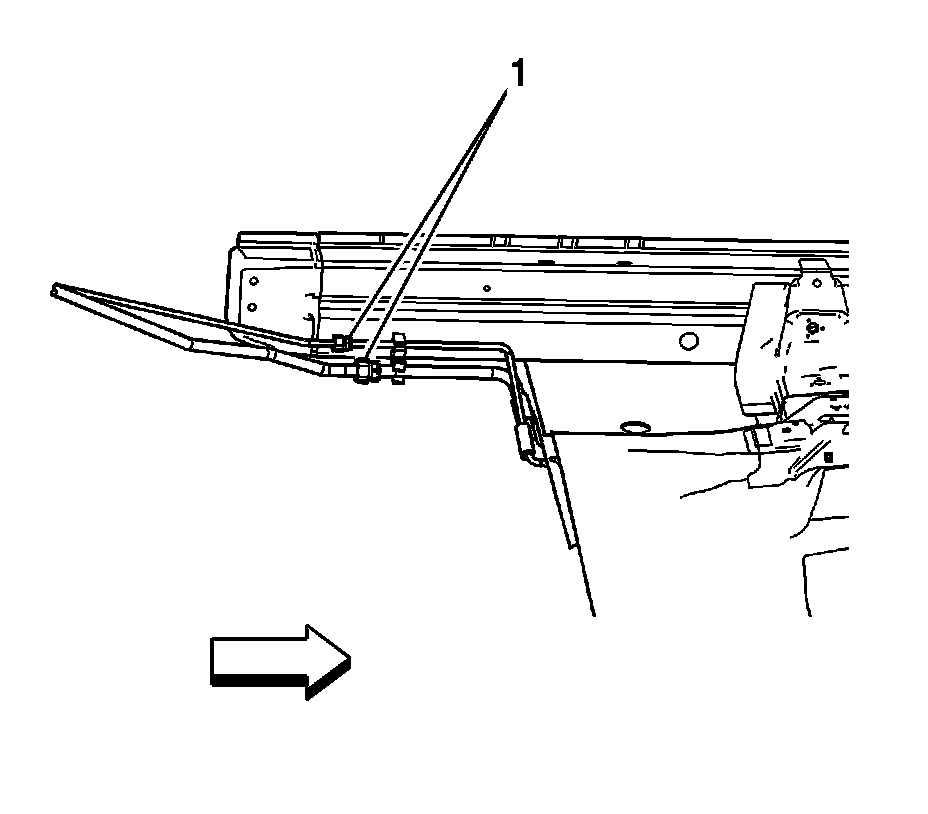

Auxiliary Air Conditioning Evaporator Front Tube Replacement (Discharge Line)
Auxiliary Air Conditioning Evaporator Front Tube Replacement (Discharge Line)
Tools Required
J 39400-A Halogen Leak Detector
Removal Procedure
1. Recover the A/C system. Refer to Refrigerant Recovery and Recharging (Refrigerant Recovery and Recharging) .

2. Raise and support the vehicle. Refer to Lifting and Jacking the Vehicle (Service and Repair) .
3. Remove the auxiliary front discharge line to front discharge line quick connect fitting. Refer to Air Conditioning Line/Tube Connector Removal/Replacement (Air Conditioning Line/Tube Connector Removal/Replacement) .
4. Disconnect the auxiliary front discharge line from the front discharge line.

5. Loosen the auxiliary front discharge line to auxiliary rear discharge line fitting.
6. Disconnect the auxiliary front discharge line from the auxiliary rear discharge line.
7. Disconnect the auxiliary front discharge line from the body retainers.
8. Remove the auxiliary front discharge line from the vehicle.
9. Remove and discard the O-rings from the auxiliary front discharge line. Refer to O-Ring Replacement (Service and Repair) .
Installation Procedure
1. Install new O-rings to the auxiliary front discharge line. Refer to O-Ring Replacement (Service and Repair) .
2. Install the auxiliary front discharge line to the vehicle.
3. Connect the auxiliary front discharge line to the body retainers.
4. Connect the auxiliary front discharge line to the auxiliary rear discharge line.
Notice: Refer to Fastener Notice (Fastener Notice) .
5. Install the fitting of the auxiliary front discharge line.
Tighten the fitting to 9 N.m (80 lb in).
6. Connect the auxiliary front discharge line to the front discharge line.
7. Install the auxiliary front discharge line to front discharge line quick connect fitting. Refer to Air Conditioning Line/Tube Connector Removal/Replacement (Air Conditioning Line/Tube Connector Removal/Replacement) .
8. Lower the vehicle.
9. Evacuate and recharge the A/C system. Refer to Refrigerant Recovery and Recharging (Refrigerant Recovery and Recharging) .
10. Leak test the fittings of the component using J 39400-A .